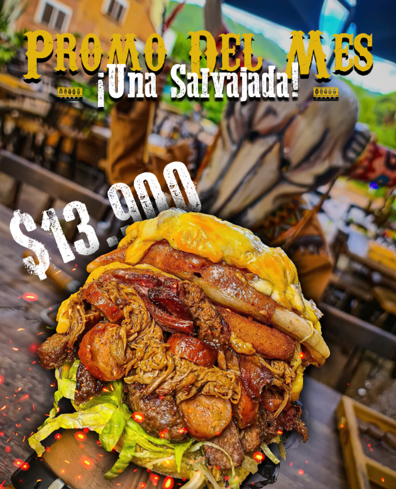
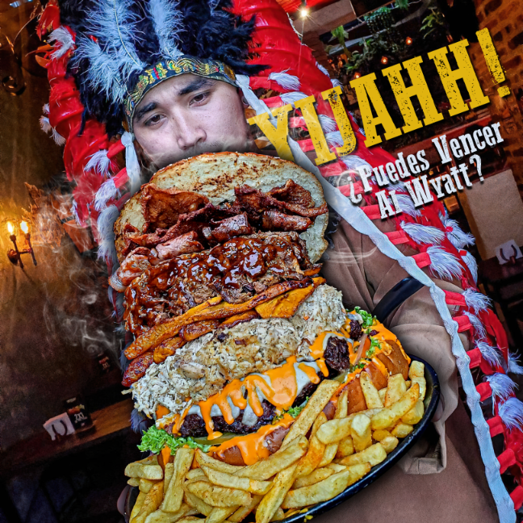

Viejo Oeste Restaurante
Las piezas promocionales diseñadas para las redes sociales fueron creadas manteniendo un estilo adaptado al del restaurante. En estas creaciones visuales, me enfoqué en reflejar la identidad y el ambiente del restaurante para asegurar que las promociones fueran presentadas de manera coherente y atractiva en las plataformas digitales, captando así la atención del público objetivo y manteniendo la imagen de la marca.


...